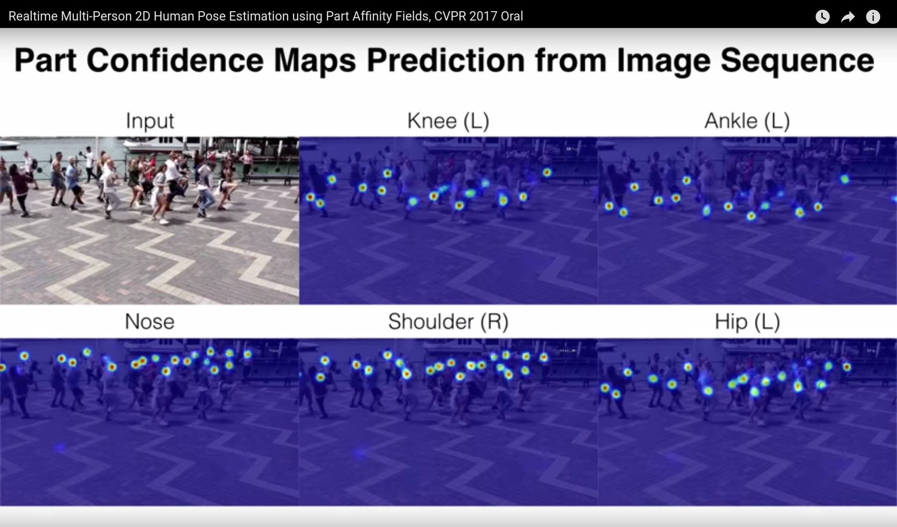
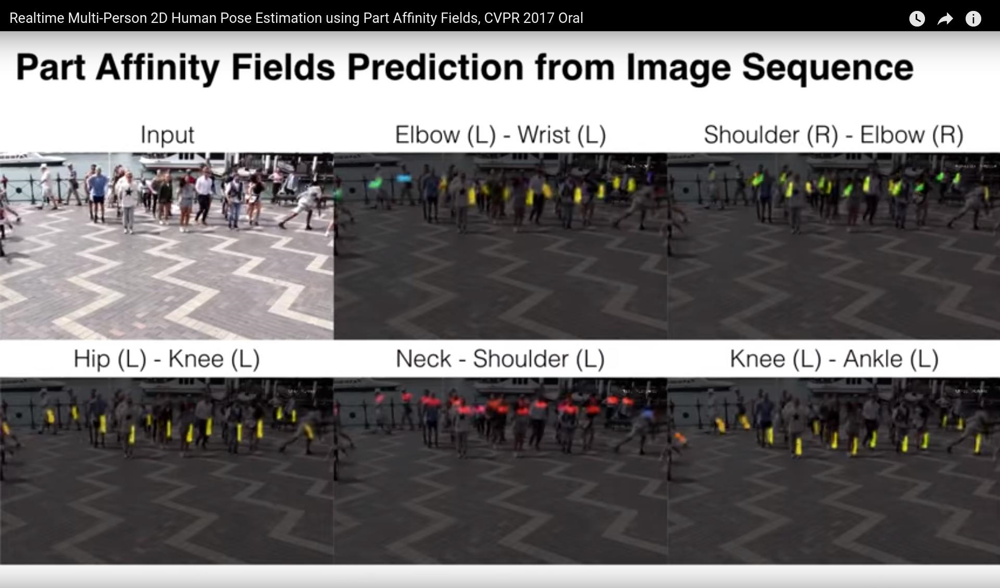

|
OpenPose
1.7.0
The first real-time multi-person system to jointly detect human body, hand, facial, and foot keypoints
|
|
OpenPose
1.7.0
The first real-time multi-person system to jointly detect human body, hand, facial, and foot keypoints
|
Check doc/output_keypoints.md for the basic output information. This document is for users that want to use the heatmaps.
If you choose to visualize a body part or a PAF (Part Affinity Field) heat map with the command option --part_to_show, the visual GUI should show something similar to one of the following images:


For the heat maps storing format, instead of saving each of the 67 heatmaps (18 body parts + background + 2 x 19 PAFs) individually, the library concatenates them into a huge (width x #heat maps) x (height) matrix (i.e., concatenated by columns). E.g., columns [0, individual heat map width] contain the first heat map, columns [individual heat map width + 1, 2 * individual heat map width] contain the second heat map, etc. Note that some image viewers are not able to display the resulting images due to the size. However, Chrome and Firefox are able to properly open them.
The saving order is body parts + background + PAFs. Any of them can be disabled with program flags. If background is disabled, then the final image will be body parts + PAFs. The body parts and background follow the order of getPoseBodyPartMapping(const PoseModel poseModel).
The PAFs follow the order specified on getPosePartPairs(const PoseModel poseModel) together with getPoseMapIndex(const PoseModel poseModel). E.g., assuming COCO (see example code below), the PAF channels in COCO start in 19 (smallest number in getPoseMapIndex, equal to #body parts + 1), and end up in 56 (highest one). Then, we can match its value from getPosePartPairs. For instance, 19 (x-channel) and 20 (y-channel) in getPoseMapIndex correspond to PAF from body part 1 to 8; 21 and 22 correspond to x,y channels in the joint from body part 8 to 9, etc. Note that if the smallest channel is odd (19), then all the x-channels are odd, and all the y-channels even. If the smallest channel is even, then the opposite will happen.
If you save the heatmaps in floating format by using the flag --write_heatmaps_format float, you can later read them in Python with:
Note that --net_resolution sets the size of the network, thus also the size of the output heatmaps. This heatmaps are resized while keeping the aspect ratio. When aspect ratio of the input and network are not the same, padding is added at the bottom and/or right part of the output heatmaps.